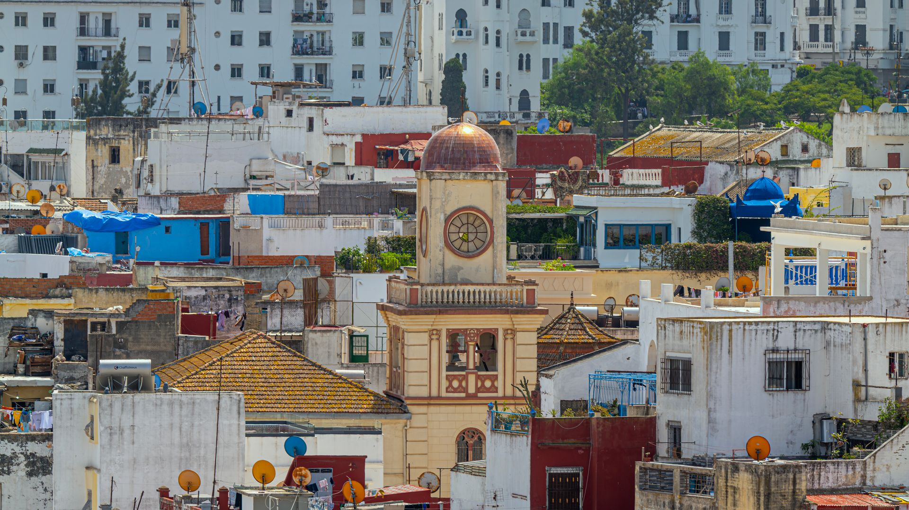

Desde España
Un corto trayecto en ferry desde Tarifa o Algeciras.

Tours privados · Tánger
Tánger es la puerta de entrada para quien llega desde España en ferry o en avión. Nuestros tours privados desde Tánger empiezan en el norte con Chefchaouen y Fez, cruzan el desierto del Sáhara y siguen hasta Marrakech o la costa atlántica — de 6 a 15 días.
5 tours
Ciudades imperiales · Sáhara · Agadir · Essaouira
Ver itinerarioSáhara · Marrakech · costa atlántica
Ver itinerarioChefchaouen · Fez · Sáhara · Marrakech
Ver itinerarioRabat · Marrakech · Sáhara · Fez · Chefchaouen
Ver itinerarioChefchaouen · Fez · Sáhara · Marrakech
Ver itinerarioUn corto trayecto en ferry desde Tarifa o Algeciras.
La ciudad azul del Rif el primer día.
Recorre todo el país desde Tánger hasta el Sáhara.
Acaba tu viaje y vuela de vuelta desde Marrakech.
Sí, tu conductor privado puede recogerte en el puerto de Tánger Med o Tánger Ville, en el aeropuerto o en tu hotel.
Los tours de 7 y 10 días desde Tánger son los más completos para una primera visita: Chefchaouen, Fez, el Sáhara y Marrakech.
Entre 2 y 3 horas, por eso Chefchaouen es la primera parada ideal.
Cuéntanos tus fechas y deseos — respondemos en menos de 24 horas con un itinerario personalizado.